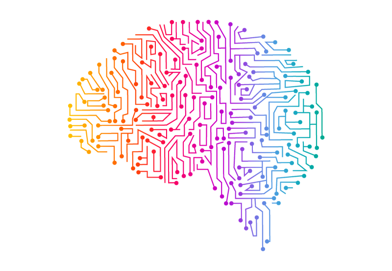

VINRAY Detect

VINRAY Detect – автоматическая система обнаружения дефектов
Быстрое, точное и интегрируемое решение для контроля качества на производстве


Memric

Ipsum
VINRAI

Quanex

Synthet
Компоненты системы VINRAY Detect
Детектор
Высокоскоростная камера/камера с высоким разрешением и промышленный мини-ПК с встроенной нейросетью. Камера делает снимки исследуемой поверхности, а нейросеть анализирует кадры и определяет дефекты (трещины, поры, включения).

Сигнальный блок-D
Плата с информативным дисплеем, принимающая данные по локальной сети и мгновенно показывающая общее количество дефектов с цветовой индикацией состояния (зелёный – всё в норме, жёлтый – пограничные дефекты, красный – аварийное состояние).

Высокая производительность
Система способна обрабатывать до 60 изображений в минуту и выдавать результат с погрешностью менее 0.5%. Адаптивная нейросеть снижает вероятность ложных срабатываний до минимума.

Лёгкая интеграция
Подключение по локальной сети, возможность масштабирования и объединения нескольких камер в единую сеть. Готовые API для интеграции с существующими ERP/SCADA системами.

Как работает VINRAY Detect
 Автоматическое обнаружение дефектов
Автоматическое обнаружение дефектов
Наше решение состоит из двух ключевых компонентов, которые работают в связке
Блок «Детектор» с камерой и нейросетью
Сигнальный блок-D для отображения результатов
Вместе они образуют «умную» систему контроля качества, способную обрабатывать до 60 изображений в минуту и выдавать результат с погрешностью менее 0,5 %.
Почему VINRAY Detect лучше других решений

Высокая точность
Нейросеть адаптируется под ваш продукт и снижает вероятность «ложных» срабатываний до минимума. Способна распознавать трещины, царапины, мусор под плёнкой, перегревы плёнки, разрывы плёнки.
Погрешность менее 0.5%
До 60 проверок в минуту
Настраиваемые параметры

Лёгкая интеграция
Подключение по локальной сети, возможность масштабирования и объединения нескольких камер в единую сеть. Готовые API для популярных ERP/SCADA систем. Монтаж и настройка занимает от 2 до 5 дней.
Локальная сеть
Масштабируемость
Готовые API
Экономия ресурсов
Снижает число ручных проверок, минимизирует потери из-за брака и ускоряет выпуск продукции. Мини-ПК потребляет не более 50 Вт, не требует специализированной подготовки персонала.

Готовы повысить качество и скорость?
Оставьте заявку на бесплатный демо-тест прямо сейчас, и мы покажем систему в действии на вашем оборудовании
Часто задаваемые вопросы
Как быстро внедряется VINRAY Detect?
Монтаж и настройка занимает от 2 до 5 дней в зависимости от сложности линии.
Какие дефекты распознаёт система?
Трещины, царапины, мусор под плёнкой, перегревы плёнки, разрывы плёнки — настраиваемый список под ваш продукт.
Нужна ли специализированная подготовка персонала?
Операторы проходят краткий инструктаж. Система имеет интуитивный интерфейс.
Можно ли интегрировать с существующей ERP/SCADA?
Да, у нас есть готовые API и примеры подключений для популярных платформ.
Какие требования к сети и электричеству?
Доступ к локальной сети с выходом в интернет, питание 220 В. Мини-ПК потребляет не более 50 Вт.